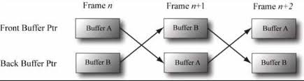

ex) command list를 나타내는 COM Interface의 이름은 ID3D12GraphicsCommandList
Texture 형식
2차원 Texture는 보통 이미지를 저장하지만 Normal, Depth 등 다른 필요한 값들도 저장할 수 있음
범용적으로 사용 가능
1차원 Texture나 3차원 Texture도 존재하는데 이 Texture는 단순히 Value Array인 것만은 아니고 Texture에 MipMap이 존재할 수 있고 GPU는 Filtering, Multi-Sampling 등의 특별한 연산을 Texture에 적용할 수 있음
하지만 Texture에 아무 자료나 담을 수 있는 것은 아님
특정 Format의 자료 원소들만 담을 수 있는데 구체적인 형식은 DXGI_FORMAT이라는 Enum으로 지정
DXGI_FORMAT의 몇 가지 Format
DXGI_FORMAT_R32G32B32_FLOAT : 각 원소는 32bit 부동소수점 성분 3개
DXGI_FORMAT_R16G16B16A16_UNROM : 각 원소는 [0, 1] 범위의 16bit 성분 4개
DXGI_FORMAT_R32G32_UINT : 각 원소는 부호없은 32bit 정수 성분 2개
DXGI_FORMAT_R8G8B8A_UNORM : 각 원소는 [0, 1] 범위의 부호 있는 8bit 성분 4개
DXGI_FORMAT_R8G8B8A8_SNORM : 각 원소는 [-1, 1] 범위로 부호있는 8bit 정수 4개
DXGI_FORMAT_R8G8B8A8_SINT : 각 원소는 [-128, 128] 범위의 부호있는 8bit 정수 4개
DXGI_FORMAT_R8G8B8A8_UINT : 각 원소는 [0, 255] 범위의 부호없는 8bit 정수 4개
R = Red, G = Green, B = Blue, A = Alpha 성분을 의미
그래픽에서 하나의 색상은 3원색인 적, 녹, 청 조합으로 만들어짐
ex) 노란색 = 빨간색 + 노란색
Alpha는 일반적으로 투명도를 제어하는데 사용되는데 Texture에 반드시 색상을 담아야 하는건 아님
그래서 DXGI_FORMAT_R32G32B32_FLOAT에 색상값이 아니라 3차원 벡터를 담을 수 있음
typeless Texture들도 있는데 이런 Texture는 일단 메모리만 확보해두고 자료의 구체적인 해석 방식은 나중에 Texture를 Pipeline에 묶을 때 지정하는(C++의 reinterpret_cast와 비슷하게) 용도로 사용됨
ex) DXGI_FORMAT_R16G16B16A16_TYPELESS : 16bit 성분 4개를 할당하되 각 16bit의 구체적인 자료 형식 (int, float, uint 등)은 지정하지 않음
나중에 사용되는데 DXGI_FORMAT Enum은 Vertex 자료 형식과 Index 자료 형식을 서술할 때도 사용됨
Swap-Chain과 Page 전환
Animation의 한 Frame 전체를 화면 바깥의(off-screen) Texture에 그려줌
이 Texture를 Back Buffer라고 부름
주어진 한 Frame을 위해 장면 전체를 Back Buffer에 그린 다음에는, 그 Back Buffer를 하나의 완전한 Frame으로서 화면에 표시함
이러면 화면을 보는 사용자에게는 Frame이 그려지는 과정이 나타나지 않음
이걸 Double Buffering이라 부름
이중 버퍼링을 효율적으로 구현하려면 하드웨어로 관리되는 2개의 Texture buffer가 필요한데, 하나응 Front Bufefr이고 다른 하나는 Back Buffer
화면에는 Front Buffer에 담긴 이미지 자료가 표시되는데 이 시간 동안 다음 Frame을 Back Buffer에 그리고 다 그려지면 Front Buffer와 Back Buffer의 역할을 맞바꿈

이렇게 Back Buffer와 Front Buffer의 역할을 교환해서 Page가 전환되게 하는 것을 Direct3D에서는 Presenting이라고 부름
효율적인 방식인데 Buffer의 내용을 바꾸는게 아니라 포인터만 서로 바꿔주면 되기 때문
Front Buffer와 Back Buffer는 하나의 Swap Chain을 형성하는데 Direct3D에서 이걸 IDXGISwapChain이란 Interface가 담당함
이 Interface는 Front Buffer Texture와 Back Buffer Texture를 담으며, Buffer 크기 변경을 위한 Method(IDXGISwapChain::ResizeBuffers)와 Buffer의 화면에 그리기 위한 Method(IDXGISwapChain:Present)도 제공
Buffer를 3개 사용하면 Triple Buffering이라고 부름
참고로 Back Buffer는 Texture이므로 원소를 Texel이라고 불러야 하지만, 그냥 pixel이라고 부르는 경우도 많음
이는 색상 정보를 담기 때문으로 색상이 아닌 정보를 담은 Texture의 원소를 Pixel이라고 부르기도 하긴 함
Depth Buffering
각 픽셀에 Depth 정보를 저장
픽셀의 깊이는 [0.0, 1.0] 범위로 0.0은 view frustum 안에서 가장 가까운 Near Plane 위의 물체에 해당, 1.0은 가장 먼, Far Plane에 해당함
Depth Buffer의 원소들과 Back Buffer의 pixel들은 1대 1로 대응됨
여러 물체들을 렌더링할때 한 물체의 픽셀들이 다른 물체보다 앞에 있는지 판정하기 위해 Depth Buffer 또는 Z-Buffering이라는 기법을 사용
중요한 점은, Depth Buffering을 이요하면 물체들을 그리는 순서와 무관하게 물체들이 제대로 가려진다는 점
응용 프로그램은 렌더링을 수행하기 전에 먼저 Back Buffer를 기본 색상(검은색이나 흰색 등 지정 가능)으로 지워줌
이때 Depth Buffer도 기본값으로 지워지는데 일반적으로 한 픽셀이 가질 수 있는 최대 깊이인 1.0을 기본값으로 사용
물체를 렌더링할때 해당 물체의 픽셀의 깊이 값을 알 수 있는데 이때 Depth Buffer에 저장된 깊이값도가 작은 경우에만 Back Buffer와 Depth Buffer에 저장됨
이런 방식으로 인해 가장 가까운 물체의 픽셀이 렌더링됨
즉, Depth Buffering Algorithm은 렌더링되는 각 픽셀의 깊이 값을 계산해서 Depth Testing을 수행해 가까운걸 렌더링하는 방식
Depth Testing은 Back Buffer의 특정 픽셀 위치에 기록될 픽셀들의 Depth들을 비교
깊이 값을 비교했을때 더 가까운 픽셀의 색을 저장
Depth Buffer는 하나의 Texture이므로 생성 시 특정한 Format을 지정해줘야 함
DXGI_FORMAT_D32_FLOAT_S8X25_UINT : 각 Texel은 32bit 부동소수점 Depth 값과 [0, 255] 범위의 부호없는 8bit 정수 Stencil 값, 그리고 다른 용도 없이 padding 용으로만 쓰이는 24bit로 구성
DXGI_FORMAT_D32_FLOAT : 각 Texel은 하나의 32bit 부동소수점 깊이값
DXGI_FORMAT_D24_UNORM_S8_UINT : 각 Texel은 [0, 1] 구간으로 부호없는 24bit 깊이값 하나의 [0, 255] 범위의 부호없는 8bit 정수 Stencil 값으로 구성
DXGI_FORMAT_D16_UNORM : 각 Texel은 [0, 1] 범위로 부호없는 16bit Depth값
참고로 Stecil Buffer는 반드시 사용해야 하는 것은 아니나, 만일 사용한다면 Stencil Buffer는 항상 Depth Buffer와 같은 Texture에 포함됨
그래서 보통 Depth-Stencil Buffer라고 불림
Resource와 Descriptor
렌더링 과정에서 CPU는 Resource들에 Write하거나 Read함
Rendering 명령을 제출하기 전에, 먼저 해당 Renering 호출이 참조할 자원들을 렌더링 파이프라인에 묶어야(bind)함
이걸 자원을 파이프라인에 연결(Link) 또는 Binding한다고 함
Rendering 호출마다 달라지는 자원들도 있으며, 따라서 필요하다면 Rendering 호출마다 자원들의 Binding을 갱심해야 함
그런데 GPU 자원들이 파이프라인에 직접 Binding되는게 아니라 이 자원을 참조하는 Descriptor 객체를 Binding해줌
Descriptor는 Resource를 GPU에 간접적으로 Binding할 수 있게 해줌
Vulkan에서도 Descriptor, Desciptor Set등을 사용했음
이렇게 간접층을 두는 이뉴는 GPU 자원이라는 것이 사실상 범용적인 메모리 조각이기 때문
자원은 범용적이므로, 같은 자원을 렌더링 파이프라인의 서로 다른 단계(Stage)들에서 사용할 수 있음
ex) Write하는 Render Target으로 사용하는데 다른곳에서 Read하는 Texture로 사용할 수 있음
자원 자체는 Write/Read에 대해서 구분하지 않음
또한, 자원의 일부 영역만 렌더링 파이프라인에묶오 싶은 때가 있는데, 자우너 자체에는 이런 정보가 없고 애초에 자원을 형식없이 생성할 수 있음
무형식으로 만들면 GPU는 자원의 형식을 알 수 없음
Descriptor는 Resource를 지정하는 수단일 뿐만 아니라, Resource를 GPU에 어떻게 사용할지 알려주는 것이기도 함
Direct3D에게 자원의 사용법(Resource를 Pipeline의 어떤 Stage에 묶어야할지 등)을 알려줌
가능한 경우 Pipeline에 묶을 자원의 부분 영역을 Descriptor로 지정할 수 있음
무형식으로 생성된 자원의 경우, 그 자원을 참조하는 Descriptor를 생성할 때 그 자원의 구체적인 형식을 명시할 수 있음
이것도 엔진 만들때 좋을 듯
참고로 Veiw는 Descriptor와 동의어
View라는 용어는 DX12 이전 버전들에서 사영되었고 DX12에서도 일부 사용되고 있음
Descriptor는 Resource의 사용버에 따라 여러 종류(형식)이 존재
Constant Buffer = CBV
Shader Resource = SRV
Unordered Access View = UAV
Sampler Descriptor는 Texture를 적용할때 쓰이는 Sampler를 설명
Depth Stencil Buffer = DSV
Descriptor Heap은 Descriptor들의 배열
프로그램이 사용하는 Descriptor들이 저장되는 곳이 Descriptor Heap
Descriptor 종류마다 개별적인 Descriptor Heap이 필요하고 같은 종류는 같은 Descriptor Heap에 저장됨
또한, 한 종류의 Descriptor에 대해 여러 개의 Heap을 사용할 수 있음
하나의 Resource를 참조하는 Descriptor가 1개뿐이어야 하는 것은 아님
한 Resource의 여러 부분 영역을 여러 Descriptor가 참조할 수 있음
또한, 하나의 자원을 렌더링 파이프라인의 여러 단계에서 Binding할 수 있는데, 단계마다 개별적인 Descriptor가 필요함
ex) 하나의 Texture를 Render Target이나 Shader Resource로 사용하는 경우, RTV 형식의 Descriptor와 SRV 형식의 Descriptor를 만들어 둘 다 사용
무형식 Resource를 만든 경우 Texture의 원소를 이를테면 부동소수점 값으로 사용할 수도 있고 정수로 사용할 수도 있는데, 이렇게 하려면 2개의 Descriptor, 즉 부동소수점 형식을 지정하는 Descriptor와 정수 형식을 지정하는 Descriptor 2개가 필요함
Descriptor들은 프로그램 초기화 시점에서 생성해야 됨
이는 이때 일정 정도의 형식 점검과 유효성 검증이 일어나기 때문이고 초기화 시점에 생성하는 것이 실제 실행 시점에서 생성하는 것보다 좋음
참고로 무형식 자원은 다양한 방식으로 해석할 필요가 있는 경우만 사용하고 아니면 형식을 꼭 지정해서 자원을 만들어야 Driver에서 최적화를 수행해줌
Multi-Sampling 이론
계단 현상을 없애기 위한 Anti-Aliasing
Direct3D에서 지원하는 기법
일부 계산 결과를 subpixel들 사이에서 공유하기 때문에 Super Sampling 기법보다 비용이 적음
이미지 색상을 각 부분픽셀마다 계산하는 것이 아니라 픽셀당 한 번만 계산하고(픽셀의 중심에서), 그 색상과 부분픽셀들의 가시성(이를 위해 부분픽셀당 Depth-Stencil Testing을 함)과 포괄도(부분픽셀을 다각형이 어느 정도나 덮고 있는지를 뜻하는 값)을 이용해 최종 색살을 결정
하지만 결국 추가 계산이 필요하기에 실시간 렌더링에서는 사용하지 않거나 다른 방식을 주로 사용하는 경우가 많음